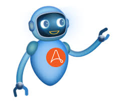

Automation
Automating repetitive tasks and business processes using tools like Automation Anywhere, UiPath, and Python scripting.
Some commonly used tools and technologies in automation include:
- Automation Anywhere: A Robotic Process Automation (RPA) tool that allows businesses to automate repetitive tasks using a visual drag-and-drop interface.
- UiPath: Another popular RPA tool that provides a platform for automating repetitive tasks, including data entry, transaction processing, and report generation.
- Blue Prism: A leading RPA tool that offers a digital workforce to automate complex business processes with high accuracy and efficiency.
- PyAutoGUI: A Python library that enables cross-platform control of the mouse and keyboard, useful for automating GUI interactions and repetitive tasks.
By leveraging these tools and technologies, automation engineers can streamline workflows, improve efficiency, and reduce human error in various industries such as finance, healthcare, and manufacturing.